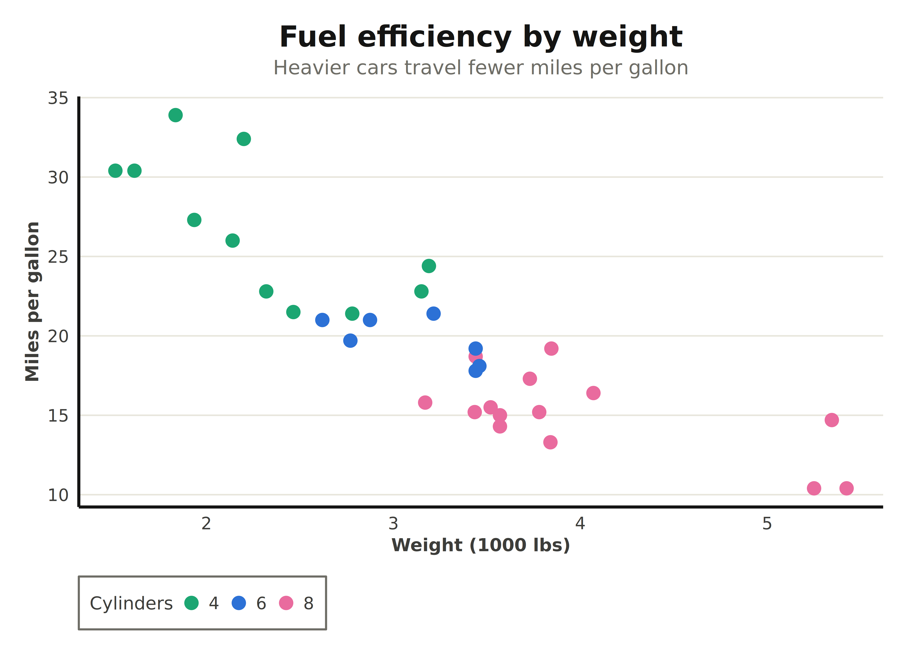
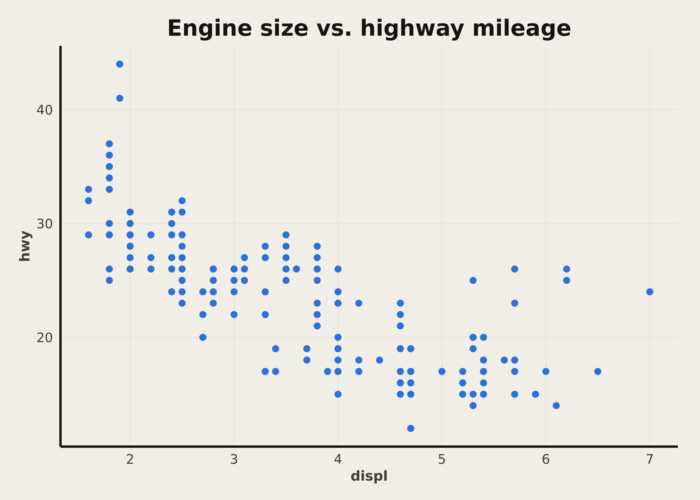
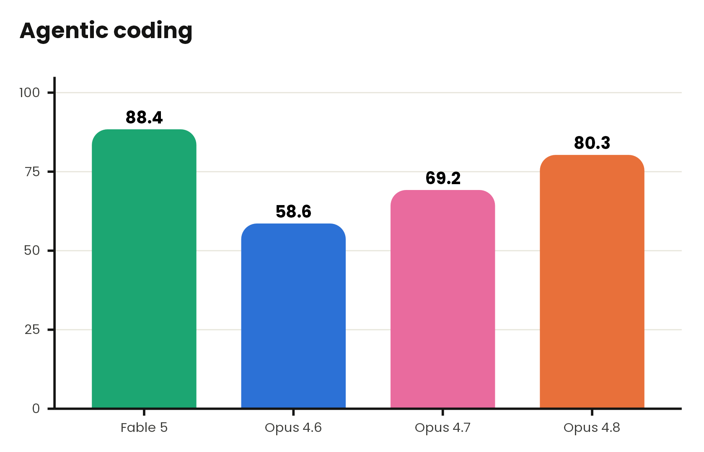
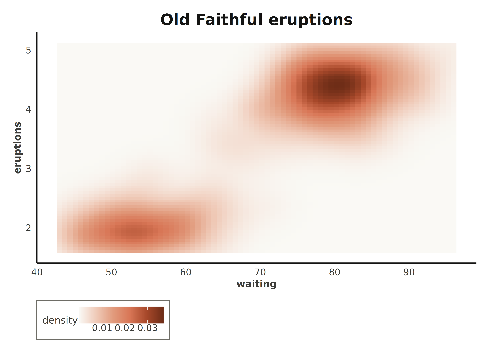
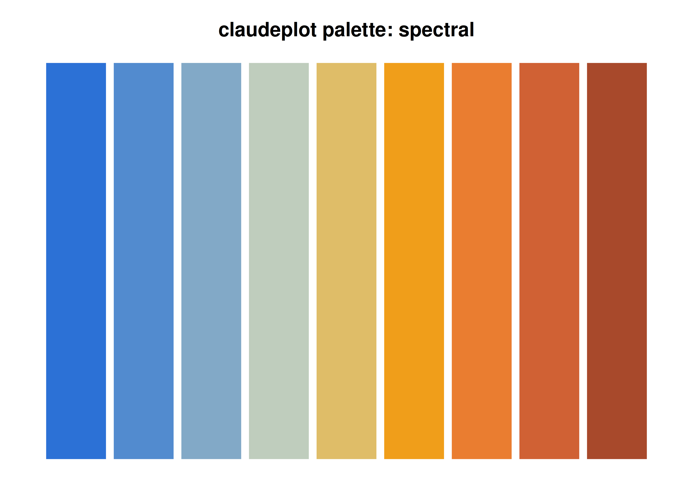
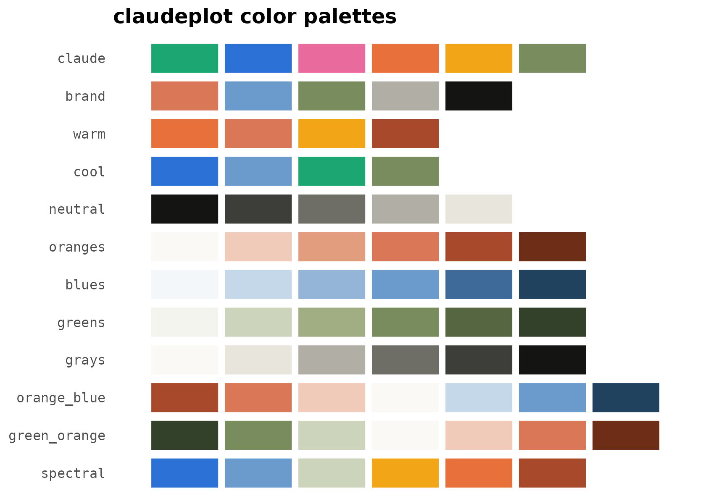

claudeplot brings the visual language of Anthropic and
Claude to ggplot2: a publication-ready theme, color
palettes from Anthropic’s brand and its data-visualization style,
color/fill scales, and palette helpers.
The theme
theme_claude() gives a light background, light
horizontal grid lines, strong axis lines, a bold Poppins title, and a
serif Lora subtitle.
ggplot(mtcars, aes(wt, mpg, color = factor(cyl))) +
geom_point(size = 3) +
scale_color_claude_d() +
labs(
title = "Fuel efficiency by weight",
subtitle = "Heavier cars travel fewer miles per gallon",
x = "Weight (1000 lbs)", y = "Miles per gallon", color = "Cylinders"
) +
theme_claude()
#> Warning in grid.Call(C_stringMetric, as.graphicsAnnot(x$label)): Unable to load
#> font: Lora
#> Warning in grid.Call(C_stringMetric, as.graphicsAnnot(x$label)): Unable to load
#> font: Lora
#> Warning in grid.Call(C_textBounds, as.graphicsAnnot(x$label), x$x, x$y, :
#> Unable to load font: Lora
#> Warning in grid.Call(C_textBounds, as.graphicsAnnot(x$label), x$x, x$y, :
#> Unable to load font: Lora
#> Warning in grid.Call.graphics(C_text, as.graphicsAnnot(x$label), x$x, x$y, :
#> Unable to load font: Lora
#> Warning in grid.Call.graphics(C_text, as.graphicsAnnot(x$label), x$x, x$y, :
#> Unable to load font: Lora
#> Warning in grid.Call.graphics(C_text, as.graphicsAnnot(x$label), x$x, x$y, :
#> Unable to load font: Lora
You can control the grid ("y", "x",
"xy", "none"), toggle the axis lines, and
switch to Anthropic’s warm off-white background:
ggplot(mpg, aes(displ, hwy)) +
geom_point(color = claude_colors[["viz_blue"]]) +
labs(title = "Engine size vs. highway mileage") +
theme_claude(grid = "xy", background = "cloud")
Color scales
Every scale comes in discrete (_d) and continuous
(_c) forms, for both color/colour
and fill.
df <- data.frame(
model = c("Opus 4.6", "Opus 4.7", "Opus 4.8", "Fable 5"),
score = c(58.6, 69.2, 80.3, 88.4)
)
ggplot(df, aes(model, score, fill = model)) +
geom_col(width = 0.7) +
geom_text(aes(label = score), vjust = -0.5, fontface = "bold") +
scale_fill_claude_d() +
scale_y_continuous(limits = c(0, 100), expand = expansion(mult = c(0, 0.05))) +
labs(title = "Agentic coding", subtitle = "SWE-Bench Pro (%)", x = NULL, y = NULL) +
theme_claude() +
theme(legend.position = "none")
#> Warning in grid.Call(C_textBounds, as.graphicsAnnot(x$label), x$x, x$y, :
#> Unable to load font: Lora
#> Warning in grid.Call(C_textBounds, as.graphicsAnnot(x$label), x$x, x$y, :
#> Unable to load font: Lora
#> Warning in grid.Call.graphics(C_text, as.graphicsAnnot(x$label), x$x, x$y, :
#> Unable to load font: Lora
#> Warning in grid.Call.graphics(C_text, as.graphicsAnnot(x$label), x$x, x$y, :
#> Unable to load font: Lora
#> Warning in grid.Call.graphics(C_text, as.graphicsAnnot(x$label), x$x, x$y, :
#> Unable to load font: LoraRounded bars
Anthropic’s benchmark charts often use bars with softly rounded tops.
The ggrounded package
pairs nicely with claudeplot: swap geom_col() for
geom_col_rounded() for the same look.
library(ggrounded)
ggplot(df, aes(model, score, fill = model)) +
geom_col_rounded(width = 0.7, radius = 0.3) +
geom_text(aes(label = score), vjust = -0.5, fontface = "bold") +
scale_fill_claude_d() +
scale_y_continuous(limits = c(0, 100), expand = expansion(mult = c(0, 0.05))) +
labs(title = "Agentic coding", subtitle = "SWE-Bench Pro (%)", x = NULL, y = NULL) +
theme_claude() +
theme(legend.position = "none")
#> Warning in grid.Call(C_textBounds, as.graphicsAnnot(x$label), x$x, x$y, :
#> Unable to load font: Lora
#> Warning in grid.Call(C_textBounds, as.graphicsAnnot(x$label), x$x, x$y, :
#> Unable to load font: Lora
#> Warning in grid.Call.graphics(C_text, as.graphicsAnnot(x$label), x$x, x$y, :
#> Unable to load font: Lora
#> Warning in grid.Call.graphics(C_text, as.graphicsAnnot(x$label), x$x, x$y, :
#> Unable to load font: Lora
#> Warning in grid.Call.graphics(C_text, as.graphicsAnnot(x$label), x$x, x$y, :
#> Unable to load font: Lora
Continuous scales interpolate the sequential and diverging palettes:
ggplot(faithfuld, aes(waiting, eruptions, fill = density)) +
geom_raster() +
scale_fill_claude_c(palette = "oranges") +
labs(title = "Old Faithful eruptions") +
theme_claude(grid = "none")
Palettes
List the palettes, draw one, or draw them all:
claude_palette_names()
#> [1] "claude" "brand" "warm" "cool" "neutral"
#> [6] "oranges" "blues" "greens" "grays" "orange_blue"
#> [11] "green_orange" "spectral"
show_claude_palette("spectral", n = 9, type = "continuous")

The qualitative families are claude (the vivid benchmark
palette), brand (muted Anthropic accents),
warm, cool, and neutral.
Sequential families are oranges, blues,
greens, and grays; diverging families are
orange_blue, green_orange, and
spectral.
Fonts
claudeplot bundles Poppins and Lora and registers them with
systemfonts on load. They render on ragg and
svglite devices; check availability with:
claude_font_status()
#>
#> ── claudeplot font status ──────────────────────────────────────────────────────
#> ✔ Poppins (headings): available
#> ✔ Lora (body/subtitle): available
#> ✔ systemfonts: installed
#> ✔ ragg: installed
#> ✔ `theme_claude()` will use Poppins and Lora automatically.If a font is unavailable, theme_claude() falls back to
generic "sans" and "serif" families, so plots
always render.